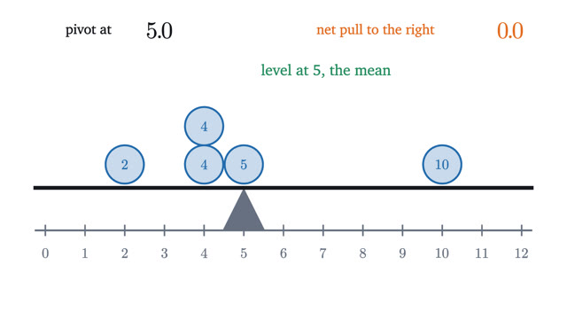
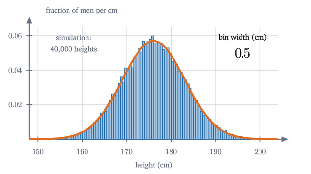
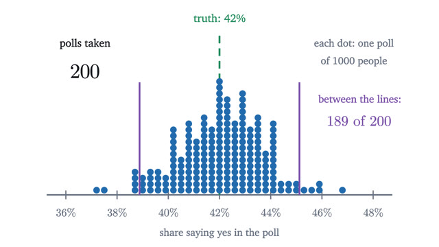
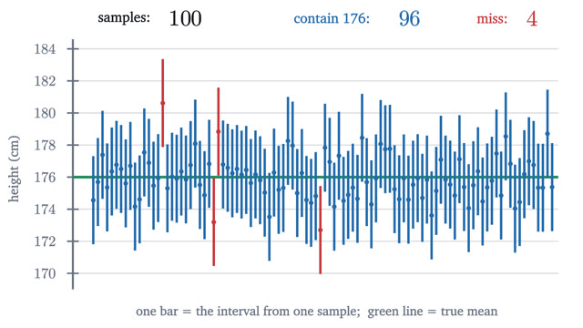
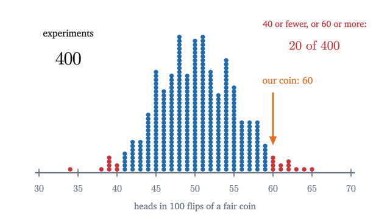
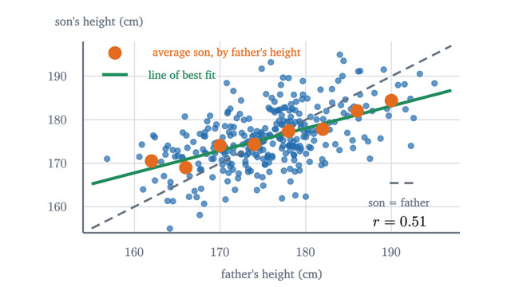

Statistics
What a sample can and cannot tell you about the world.
Start with lesson 1-
1
Mean, median and standard deviation: what each one saysThe mean is a balance point, the median is a middle, and the standard deviation is a typical distance. Each is the best answer to a precise question.

-
2
The normal distribution and the 68-95-99.7 ruleA histogram with ever narrower bins settles onto a curve whose areas are probabilities. For the bell curve, those areas give the 68-95-99.7 rule and z-scores.

-
3
The central limit theorem: why bell curves are everywhereOne die is flat, but the average of 30 dice follows a bell curve. The central limit theorem says when this happens, how fast, and when it fails.

-
4
Standard error: how 1,000 people speak for a countryA random sample's accuracy depends on its own size, not on the population's. We prove the square-root law for the standard error and see its limits.

-
5
What a 95% confidence interval does and does not sayWe derive the interval mean ± 1.96 standard errors, test its 95% coverage by simulation, and go through the common misreadings and why each is wrong.

-
6
P-values and hypothesis tests without the mysticismA coin lands heads 60 times in 100. We compute the exact p-value, define the two kinds of error, and show with Bayes' theorem what a p-value is not.

-
7
Correlation and the line of best fit, derivedWe derive the least-squares line, define the correlation r and prove it lies between -1 and 1, then explain regression to the mean and why r is not causation.
